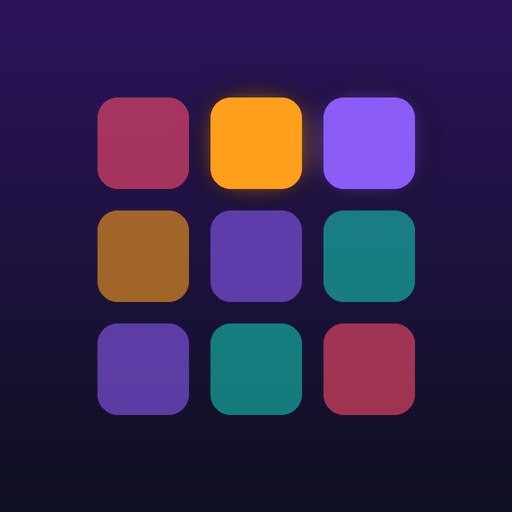

PlainPads privacy policy
This policy covers the PlainPads Android app (“PlainPads”), a drum pad and beat maker. In short: PlainPads does not collect, sell or share any data. It has no account, no ads, no analytics and no tracking, and it does not have permission to use the internet.
Information the app handles
- The beats you make: pad settings, step patterns, loops and effect settings.
- Recordings and exports you create (WAV files).
- Audio files you choose to import onto a pad, and sounds you record with the microphone.
- Your settings (theme, vibration, audio buffer).
All of this stays on your phone, in the app's private storage. None of it is ever sent to the developer or anyone else.
Microphone
PlainPads asks for the microphone permission only when you tap Record from mic in a pad's settings, to sample a sound onto that pad. The recording is saved on your phone as a pad sound and is never uploaded. You can say no and use every other feature.
Files
Importing a sound uses the Android file picker, so the app only sees the file you pick. Saving or sharing a recording uses the Android save dialog or share sheet, and the file goes only where you choose.
Sounds
All built-in sounds were synthesized for this app and are released as CC0 (public domain).
Storage and deletion
Deleting a beat or recording in the app deletes its file. Uninstalling the app removes all its data. Since we never receive your data, there is nothing for us to delete on our side.
What we don't do
- We don't collect personal or sensitive information.
- We don't sell or transfer user data to third parties.
- We don't show ads or use advertising IDs.
- We don't use analytics or crash-reporting services.
Children
The app is not directed at children under 13 and does not knowingly collect information from anyone.
Changes
If this policy changes, the updated version will be posted on this page with a new date.
Contact
Questions or requests: open an issue on GitHub.